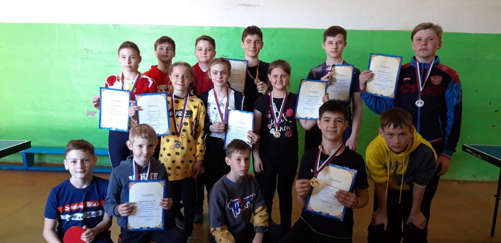
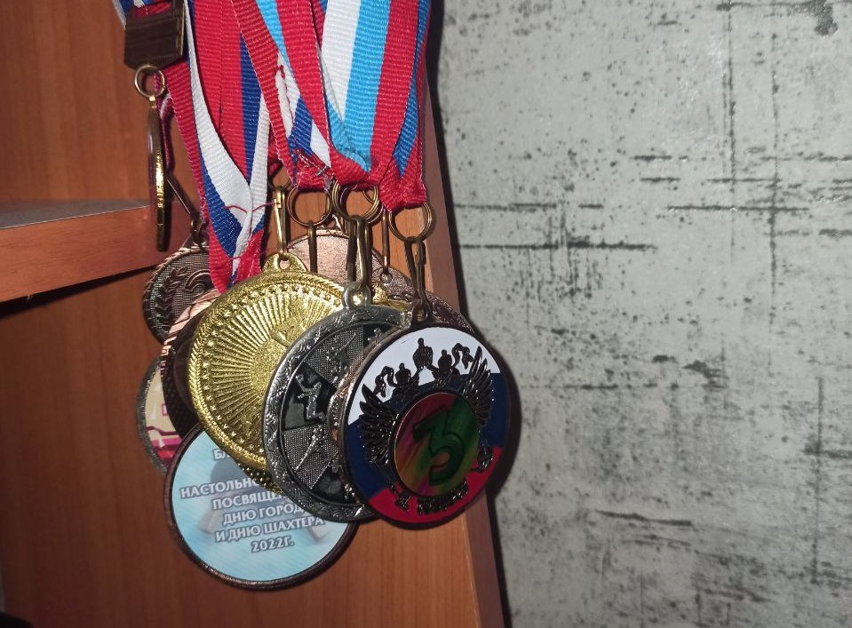
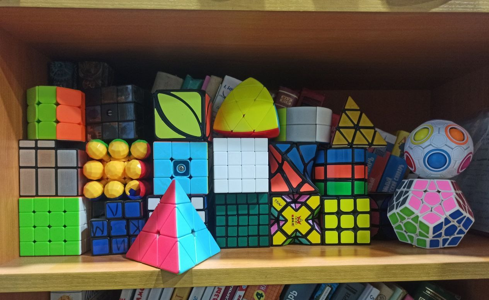
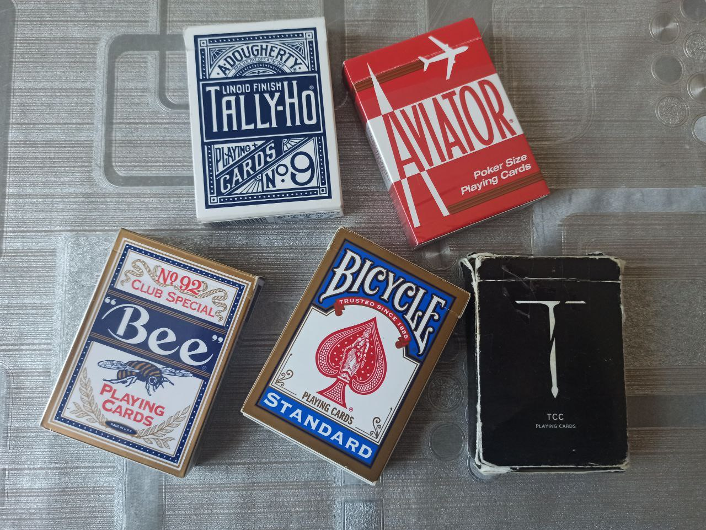

Обо мне
Я студент 2 курса БГУ. Моя специальность называется "Информационные ситсемы и технологии в управлении". Мне достаточно интересно изучать программирование, хоть я и не был уверен в этом при поступлении. Также я занимаюсь спортом, увлекюсь сбркой кубиков Рубика различных модификация и видов (на скорость). Еще увлекаюсь игрой в настольный теннис. Также увлекался волйболом и баскетболом
Мои увлечения и достижения
Достижения
- Победитель районных соревноаний по настольному теннису среди юнош до 18 лет и мужчин до 45 лет
- Входил в топ-10 области по настольному теннису
- Участник соренвоний Сибирского Федеральног округа по настольному теннису
- 3-й сортивный разряд по баскетболу и настольному теннису
Подробнее об увлечениях
Настольный теннис
Если говорить, о настольном теннисе, то им я занимался дольше всего и успешнее, чем другими вещами. Сейчас я продолжаю играть в теннис, однако больше для того, чтобы отвелчься и расслабиться.

Прочие виды спотра
Я занимался шахматами 3 года, но никаких особых успехов не достиг. Еще занимался баскетболом 3 года. Участвовал в областных соревнованиях, однако мы с командой заняли 6 место. Также проводились различные соренвования, приуроченные к различным событиям. Например в Саянске. Еще проводились районные сорвенования, на которых мы занимали призовые места.

Speedcubing
Если говрить о скоростной сборке кубика Рубика, котрая называется "speedcubing", то в основной на скорость собирал классический куб 3x3. Мой лучший результат это 14.41 секунды.

Карты
Еще я увлекался колекционирование покерных колод карт и кардистри. Кардистри - это трюки с картами. Увлекался я этим не так долго и коллекция довольно небольшая

Сейчас я ничем особенным не занимаюсь, кроме учебы и немного играю в теннис. Если кому-то интересно пообщаться, то ниже есть мой тг